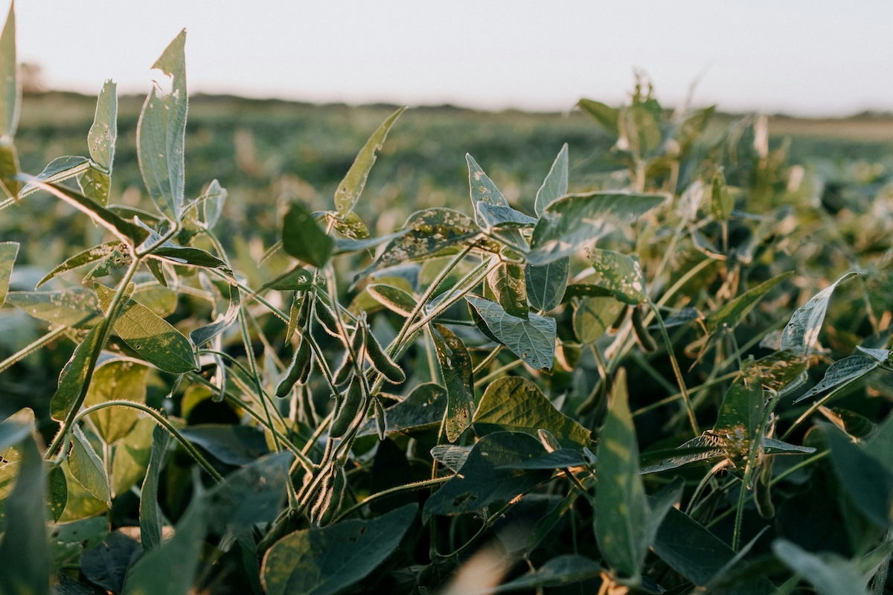

Best Plant Milk for the Environment: Complete Eco-Friendly Guide

Concerned about your environmental footprint? Switching from dairy to plant milk is one of the most impactful dietary changes you can make. But not all plant milks are created equal when it comes to sustainability. This guide breaks down the environmental impact of each option to help you make the most eco-conscious choice.
Quick Answer: Most Eco-Friendly Plant Milk
Oat milk is the most environmentally friendly plant milk overall. It requires minimal water, produces low greenhouse gas emissions, uses little land, and doesn't require tropical farming or excessive transportation. However, the full picture is more nuanced.
Environmental Rankings (Best to Worst)
- Oat Milk - Best overall environmental choice
- Pea Milk - Excellent sustainability, nitrogen-fixing benefits
- Hemp Milk - Minimal inputs, regenerative crop
- Soy Milk - Good, but deforestation concerns exist
- Rice Milk - Moderate impact, high water needs
- Coconut Milk - Transportation emissions, tropical farming
- Almond Milk - High water usage in drought regions
Understanding Environmental Impact
When comparing the environmental footprint of plant milks, we need to consider several key factors:
- Greenhouse Gas Emissions: CO2, methane, and other gases contributing to climate change
- Water Usage: Gallons of water required to grow crops and process milk
- Land Use: Agricultural area needed to produce the crop
- Biodiversity Impact: Effects on wildlife and ecosystems
- Soil Health: Whether the crop depletes or enriches soil
- Transportation: Carbon footprint of shipping ingredients
- Processing: Energy required to turn crops into milk
How Plant Milk Compares to Dairy
Before diving into individual plant milks, let's establish the baseline. According to research from Oxford University:
| Environmental Factor | Dairy Milk | Plant Milk (Average) | Reduction |
|---|---|---|---|
| Greenhouse Gas Emissions | 3.2 kg CO2 per liter | 0.7 kg CO2 per liter | 78% less |
| Land Use | 9 m² per liter | 0.7 m² per liter | 92% less |
| Water Use | 628 liters per liter | 48 liters per liter | 92% less |
The bottom line: Any plant milk is vastly more sustainable than dairy milk.
Detailed Environmental Analysis of Each Plant Milk
🏆 Oat Milk - The Environmental Champion
Why it's sustainable:
- Low Water Needs: Oats require 6x less water than almonds
- Local Growing: Grown in temperate climates (US, Canada, Europe) reducing transport emissions
- Minimal Processing: Simple production process
- Soil Benefits: Oats are often used in crop rotation to improve soil health
- Low Pesticide Use: Oats are relatively hardy and need fewer chemicals
Oat Milk Environmental Stats
- GHG Emissions: 0.9 kg CO2 per liter (lowest after pea)
- Water Use: 48 liters per liter of milk
- Land Use: 0.76 m² per liter
Potential concerns: Some oat farming uses glyphosate herbicide, though organic options avoid this. Processing does require energy, but it's minimal compared to other options.
🥈 Pea Milk - The Nitrogen Fixer
Why it's sustainable:
- Nitrogen Fixation: Peas actually enrich soil by fixing nitrogen from the air
- Lowest Emissions: Produces the least greenhouse gases of any plant milk
- Drought Resistant: Requires minimal water
- No Deforestation: Grown primarily in North America and Europe
- High Protein: Nutritionally efficient—less waste per nutrient
Pea Milk Environmental Stats
- GHG Emissions: 0.4 kg CO2 per liter (lowest overall)
- Water Use: Very low, around 20 liters per liter
- Land Use: Moderate, approximately 1 m² per liter
Potential concerns: Limited availability in some regions means increased transportation for some consumers.
🌿 Hemp Milk - The Regenerative Option
Why it's sustainable:
- Regenerative Crop: Improves soil health and requires no pesticides
- Minimal Water: Drought-tolerant plant
- Fast Growing: Matures in 3-4 months, allowing multiple harvests
- Carbon Sequestration: Absorbs more CO2 than most crops
- Complete Use: Every part of the plant can be utilized
Potential concerns: Less widely available, which can increase transportation emissions depending on location.
🌱 Soy Milk - Complex But Generally Good
Why it's sustainable:
- Nitrogen Fixing: Like peas, soybeans enrich soil
- High Yield: Produces more protein per acre than most crops
- Efficient Processing: Well-established, energy-efficient production
- Low Water Needs: Requires about the same water as oats
Soy Milk Environmental Stats
- GHG Emissions: 1.0 kg CO2 per liter
- Water Use: 28 liters per liter of milk
- Land Use: 0.66 m² per liter (most efficient)
The deforestation concern:
🌾 Rice Milk - Moderate Impact
Environmental considerations:
- High Water Needs: Rice paddies require significant irrigation
- Methane Emissions: Flooded rice fields produce methane (a potent greenhouse gas)
- Land Efficiency: Moderate land use
- Processing: Relatively simple production
Rice Milk Environmental Stats
- GHG Emissions: 1.2 kg CO2 per liter
- Water Use: 270 liters per liter (higher than most)
- Land Use: 0.54 m² per liter
Potential concerns: Higher water usage and methane production from rice paddies make this a less eco-friendly option.
🥥 Coconut Milk - Tropical Trade-offs
Environmental considerations:
- Low Water Use: Coconut palms are naturally drought-resistant
- Carbon Sequestration: Coconut palms store carbon over their 60-100 year lifespan
- Transportation: Growing in tropical regions means high shipping emissions for most consumers
- Biodiversity: Coconut plantations can displace native ecosystems
- Labor Concerns: Ethical issues in some coconut-producing regions
Coconut Milk Environmental Stats
- GHG Emissions: 1.4 kg CO2 per liter (including transport)
- Water Use: Low, around 25 liters per liter
- Land Use: Moderate
Verdict: While the coconut itself is fairly sustainable, transportation emissions and potential social issues make this a mixed choice environmentally.
🌰 Almond Milk - The Water Controversy

Environmental considerations:
- High Water Needs: Almonds require significant irrigation (about 5 liters per almond)
- Drought-Prone Regions: 80% of almonds are grown in California, which faces water scarcity
- Bee Impact: Industrial almond farming stresses honeybee populations
- Low Emissions: GHG emissions are relatively low
- Pesticide Use: Conventional almond farming uses significant pesticides
Almond Milk Environmental Stats
- GHG Emissions: 0.7 kg CO2 per liter (quite low)
- Water Use: 371 liters per liter (highest of plant milks)
- Land Use: 0.5 m² per liter
Making the Most Eco-Friendly Choice
Beyond Just the Plant Type
The sustainability of your plant milk isn't just about which plant it comes from. Consider these factors:
Additional Sustainability Factors
- Organic vs. Conventional: Organic reduces pesticide impact but may require more land
- Local Production: Reduces transportation emissions significantly
- Packaging: Tetra Pak cartons are recyclable; look for recycled content
- Fortification: Added nutrients may require extra processing and ingredients
- Additives: Fewer ingredients generally means less environmental impact
- Brand Practices: Some companies offset carbon or use renewable energy
The Most Eco-Friendly Approach: Make Your Own
Why homemade is best:
- Zero packaging waste
- No transportation emissions beyond sourcing ingredients
- Buy organic, local ingredients when possible
- Use exactly what you need—no waste
- Control additives and processing
Regional Considerations
The most sustainable choice can vary by location:
Sustainability by Region
- North America & Europe: Oat, pea, or soy milk (locally grown)
- Tropical Regions: Coconut milk (minimal transport)
- Asia: Soy or rice milk (traditional, local)
- Dry Climates: Avoid almond; choose oat or pea
- Water-Rich Areas: Most plant milks work well
Frequently Asked Questions
Is plant milk better for the environment than dairy?
Yes, dramatically so. Even the least sustainable plant milk (almond) uses far less water, land, and energy than dairy milk while producing significantly fewer greenhouse gas emissions.
What about organic dairy vs. conventional plant milk?
Organic dairy is better than conventional dairy, but even organic dairy has a much higher environmental impact than conventional plant milk. The difference between dairy and plants is more significant than the difference between organic and conventional.
Is homemade plant milk more sustainable?
Generally yes, especially if you buy organic ingredients in bulk. You eliminate packaging waste and transportation of the finished product. However, commercial production can be more energy-efficient at scale.
Does buying local plant milk make a difference?
Yes! Transportation emissions can be significant. If you can find plant milk made locally or regionally, you'll reduce the carbon footprint of your choice.
Final Recommendations
For the most environmentally conscious choice, follow this hierarchy:
- Best: Homemade oat or pea milk from organic, bulk-purchased ingredients
- Excellent: Locally-produced organic oat, pea, or hemp milk
- Very Good: Conventional oat or soy milk from sustainable brands
- Good: Any plant milk with organic/sustainable certifications
- Still Better Than Dairy: Any plant milk, even conventional almond
The environmental impact of your food choices extends far beyond just milk, but switching to plant-based options is one of the most effective individual actions you can take for the planet. Choose what's available, affordable, and works for you—every step toward plant-based is a step in the right direction.
🌱 Find Your Perfect Sustainable Plant Milk
Take our quick quiz to discover which eco-friendly plant milk matches your taste preferences, nutritional needs, and environmental values.
Take the Quiz Now